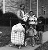
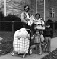

Photo Series: Native Americans, 1963-2002
About This Series
This series documents Native American life in Canada and in the Buffalo, New York area, including the Iroquois on Cattaraugus, Tonawanda and Tuscarora reservations. The series also includes Native American families in the Lower West Side of Buffalo who were photographed by Milton over a 30-year period.
Among the photographs in this series are sunflowers in a field, worn gravestones, a parched field of crops, women and men at a religious service and a woman holding corn husk dolls that she created.
Photographs on the Reservations were taken from 1963-71 and in Buffalo’s Lower West Side from 1972-2002.
Related Publications
Available through Syracuse Cultural Workers (SCW), "a peace and justice publisher" founded in 1982.
- Picture Man: the Poetry of Photographer Milton Rogovin, [DVD] 19 min. 23 sec, 70 photographs, 17 poems, 2009.
- From the Western Door to the Lower West Side, White Pine Press, 2009. Native American poet Eric Gansworth weaves his poetry with Milton Rogovin's Native American series.
- The Bonds Between Us: Family Portraits From Around The World, White Pine Press, 2001
- Milton Rogovin: The Forgotten Ones, University of Washington Press, 1985; Quantuck Lane Press, 2003
- Milton Rogovin: The Making of a Social Documentary Photographer, University of Washington Press and the Center for Creative Photography, September 30, 2006
For curriculum and a folio download of the Native Americans series, please visit the education page.


 
